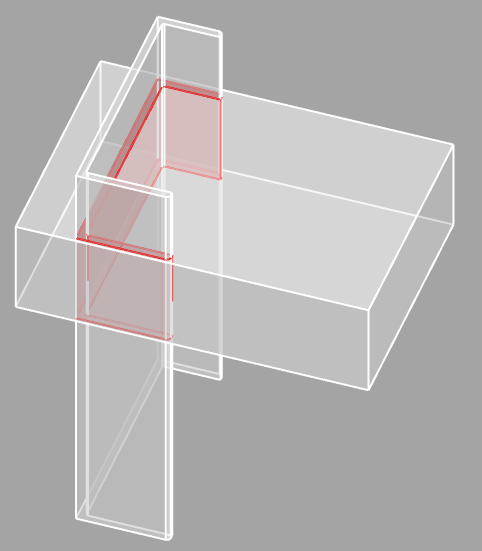
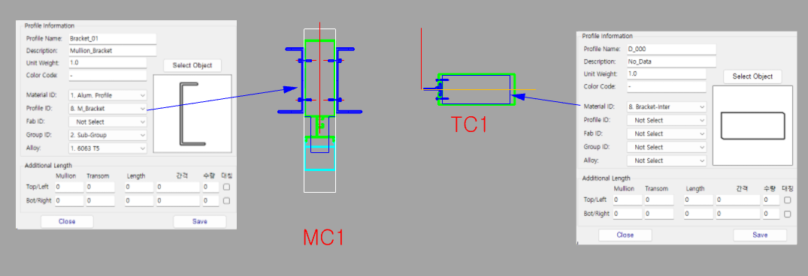

8.M_Bracket 9.T_Bracket 8.Bracket-Inter
Brackets are generated using the intersection of Mullion side elements and Transom side elements.
Used when creating a Bracket shape where a Mullion side Surface or PolyLine meets a Transom side PolyLine or Surface. The Bracket shape is formed based on the intersection location of the two elements.
| Item | Description |
|---|---|
| Mullion Side | Requires Surface or PolyLine. |
| Transom Side | Requires PolyLine or Surface. |
| Layer Condition | The two elements that intersect must be on the same Layer. |
| Combination | Composition |
|---|---|
| Combination 1 | Surface in Mullion Section Profile ID: 8.M_Bracket + PolyLine in Transom Section Material ID: 8.Bracket-Inter |
| Combination 2 | PolyLine in Mullion Section Material ID: 8.Bracket-Inter + Surface in Transom Section Profile ID: 8.M_Bracket |
| Combination | Composition |
|---|---|
| Combination 1 | Surface in Mullion Section Profile ID: 9.T_Bracket + PolyLine in Transom Section Material ID: 8.Bracket-Inter |
| Combination 2 | PolyLine in Mullion Section Material ID: 8.Bracket-Inter + Surface in Transom Section Profile ID: 9.T_Bracket |

